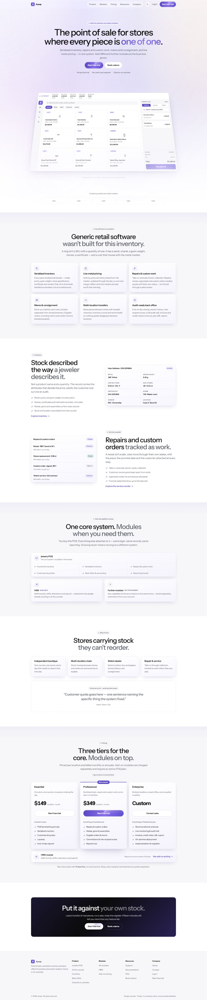
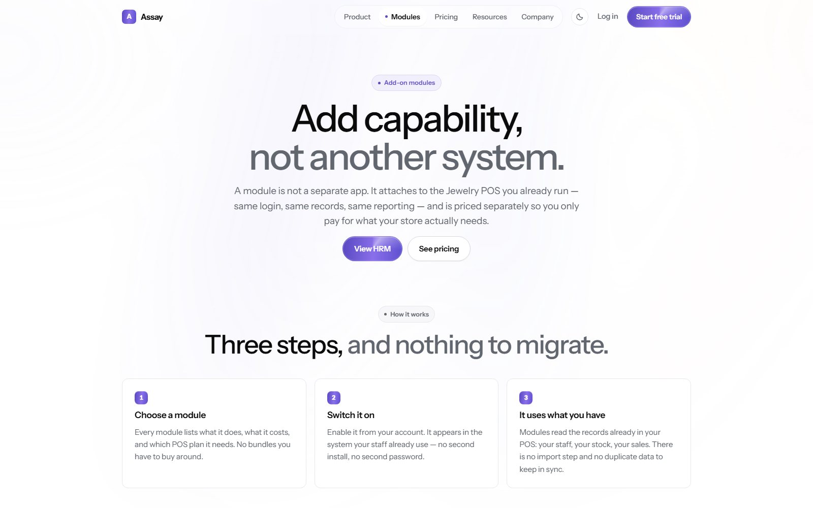
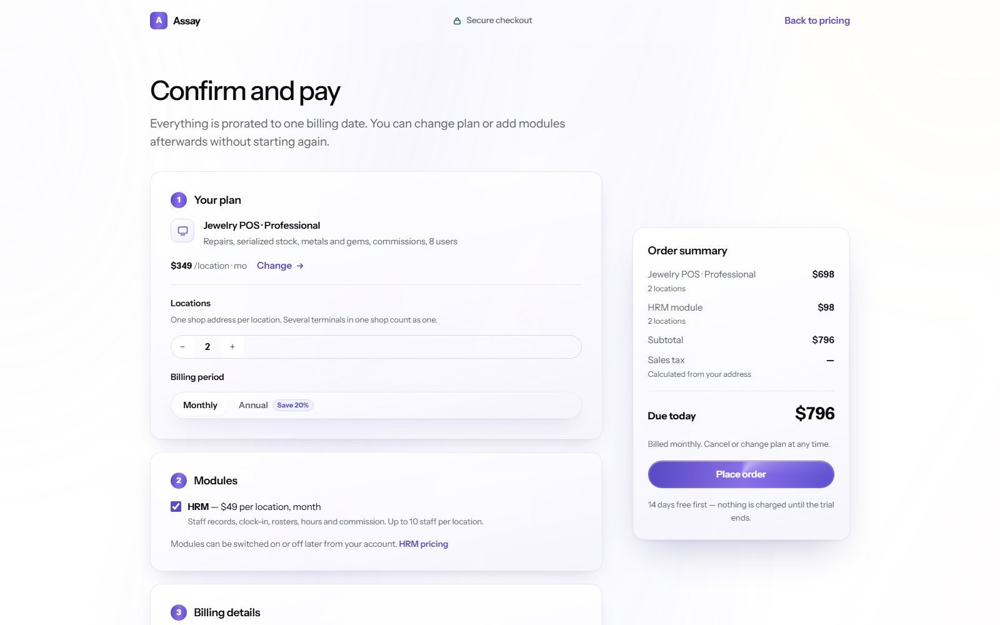
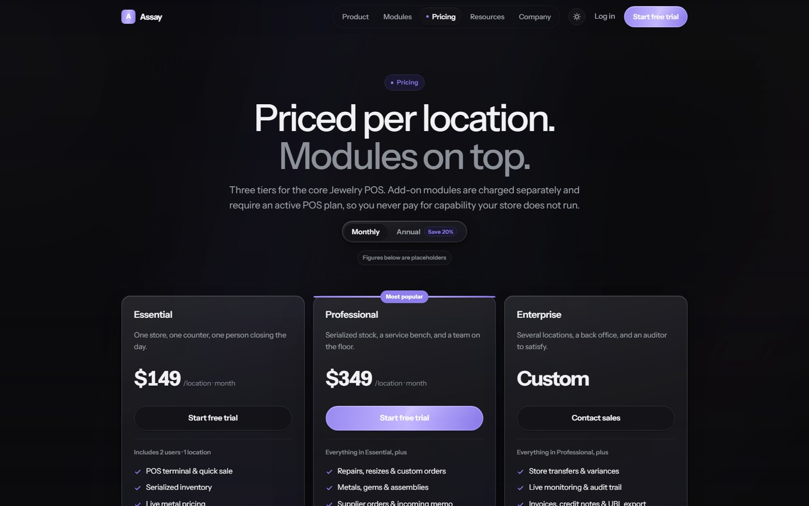

Product-first presentation
The website focuses on the POS product itself rather than presenting the company first, so visitors quickly understand what the software does and whether it fits their business.
Designing a focused product experience that makes a complex jewelry POS system easier to understand, compare and purchase.
 The question it answers
The question it answers
Is this the right POS system for my jewelry business?
The project involved creating a website for a specialised jewelry POS platform. The website needed to explain the product, communicate its capabilities, present pricing and help potential customers understand which features and add-ons were relevant to their business.
My responsibility was to structure the product experience and design the interface from the user’s perspective — the information architecture, product and feature presentation, pricing structure, user journeys, UI design and responsive layouts.
I structured the website around the path a potential customer naturally takes when evaluating business software: discover → understand → explore → compare → purchase.
The website focuses on the POS product itself rather than presenting the company first, so visitors quickly understand what the software does and whether it fits their business.
The core POS experience and additional capabilities are structured separately, so people understand the main product while still discovering optional functionality.
Rather than an isolated page, pricing connects back to product capabilities, so customers can make a more informed decision.
Selected screens from the product website — the marketing pages that explain the platform, the pricing experience, and the entry points into the product itself.







The same pages on the dark theme, which visitors opt into from the header.




This project helped me think about how a software product should be communicated before a user even enters the application — and how product structure, feature hierarchy and pricing can work together to support a purchasing decision.
Want the full walkthrough of this project? Let’s talk